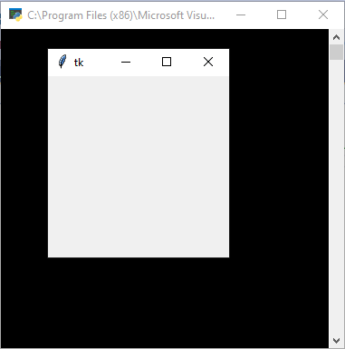
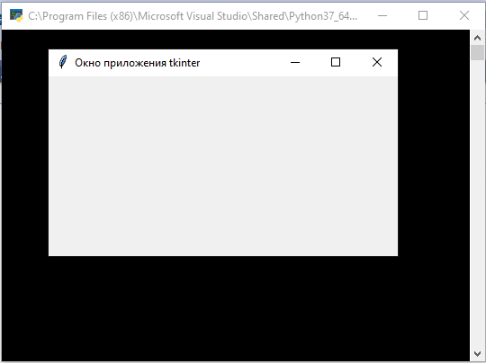
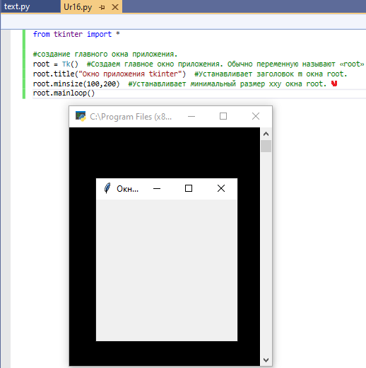
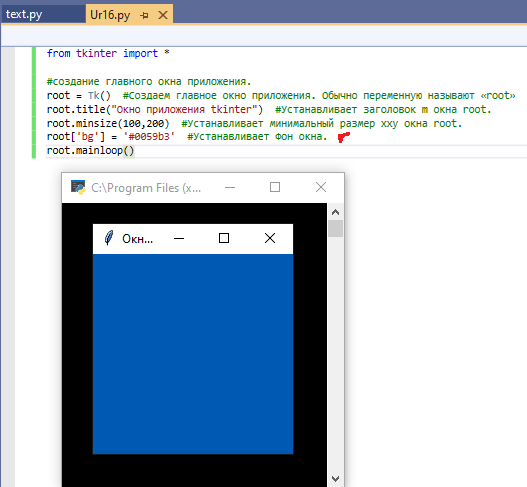
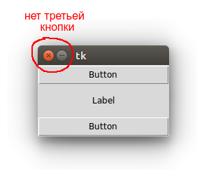
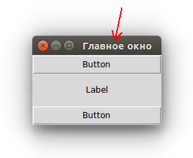
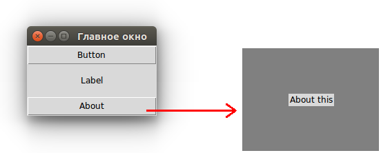

| Тема 2. Создаем окно для приложения.. | ||||||||||||||
| Назад | ||||||||||||||
|
Python предоставляет стандартную библиотеку Tkinter для создания
графического пользовательского интерфейса для настольных
приложений.
#
!/usr/bin/python3
Вывод: .  Tk - класс главной формы. Общий синтаксис создания окна: name - имя окна потомка.
Ниже a - окно главное окно.
root.title("Окно приложения tkinter") #Устанавливает заголовок m окна root.
 root.minsize(100,200) #Устанавливает минимальный размер xxy окна root.
 Устанавливает Фон окна.
 Меняем размер окна. Размер и положение окна Мы можем установить размер окна самостоятельно, для этого использовать функцию «geometry». Установим следующие размеры ширина 350, высота 550. «root.geometry(350x550)». Еще раз запускам программу. И получаем окно наших размеров. По умолчанию окно приложения появляется в верхнем левом углу экрана. Его размер (ширина и высота) определяется совокупностью размеров расположенных в нем виджетов. В случае если окно пустое, то tkinter устанавливает его размер в 200 на 200 пикселей. С помощью метода geometry можно изменить как размер окна, так и его положение. Метод принимает строку определенного формата. from tkinter import *
root = Tk()
root.geometry('600x400+200+100')
root.mainloop()
Первые два числа в строке-аргументе geometry задают ширину и высоту окна. Вторая пара чисел обозначает смещение на экране по осям x и y. В примере окно размерностью 600 на 400 будет смещено от верхней левой точки экрана на 200 пикселей вправо и на 100 пикселей вниз. Если перед обоими смещениями вместо плюса указывается минус, то расчет происходит от нижних правых углов экрана и окна. Так выражение root.geometry('600x400-0-0') заставит окно появиться в нижнем правом углу. В аргументе метода geometry можно не указывать либо размер, либо смещение. Например, чтобы сместить окно, но не менять его размер, следует написать root.geometry('+200+100'). Бывает удобно, чтобы окно появлялось в центре экрана. Методы winfo_screenwidth и winfo_screenheight возвращают количество пикселей экрана, на котором появляется окно. Рассмотрим, как поместить окно в центр, если размер окна известен: …
w = root.winfo_screenwidth()
h = root.winfo_screenheight()
w = w//2 # середина экрана
h = h//2
w = w - 200 # смещение от середины
h = h - 200
root.geometry('400x400+{}+{}'.format(w, h))
…
Здесь мы вычитаем половину ширины и высоты окна (по 200 пикселей). Иначе в центре экрана окажется верхний левый угол окна, а не его середина. Если размер окна неизвестен, то его можно получить с помощью того же метода geometry, но без аргументов. В этом случае метод возвращает строку, содержащую сведения о размерах и смещении, из которой можно извлечь ширину и высоту окна. from tkinter import *
root = Tk()
Button(text="Button", width=20).pack()
Label(text="Label", width=20, height=3).pack()
Button(text="Button", width=20).pack()
root.update_idletasks()
s = root.geometry()
s = s.split('+')
s = s[0].split('x')
width_root = int(s[0])
height_root = int(s[1])
w = root.winfo_screenwidth()
h = root.winfo_screenheight()
w = w // 2
h = h // 2
w = w - width_root // 2
h = h - height_root // 2
root.geometry('+{}+{}'.format(w, h))
root.mainloop()
Метод update_idletasks позволяет перезагрузить данные об окне после размещения на нем виджетов. Иначе geometry вернет строку, где ширина и высота равняются по одному пикселю. Видимо таковы параметры на момент запуска приложения. По умолчанию пользователь может разворачивать окно на весь экран, а также изменять его размер, раздвигая границы. Эти возможности можно отключить с помощью метода resizable. Так root.resizable (False, False) запретит изменение размеров главного окна как по горизонтали, так и вертикали. Развернуть на весь экран его также будет невозможно, при этом соответствующая кнопка разворота исчезает.
 Заголовок окна По умолчанию с стоке заголовка окна находится надпись "tk". Для установки собственного названия используется метод title. …
root.title("Главное окно")
…
 Если необходимо, заголовок окна можно вообще убрать. В программе ниже второе окно (Toplevel) открывается при клике на кнопку, оно не имеет заголовка, так как к нему был применен метод overrideredirect с аргументом True. Через пять секунд данное окно закрывается методом destroy. from tkinter import *
def about():
a = Toplevel()
a.geometry('200x150')
a['bg'] = 'grey'
a.overrideredirect(True)
Label(a, text="About this")\
.pack(expand=1)
a.after(5000, lambda: a.destroy())
root = Tk()
root.title("Главное окно")
Button(text="Button", width=20).pack()
Label(text="Label", width=20, height=3)\
.pack()
Button(text="About", width=20, command=about)\
.pack()
root.mainloop()
overrideredirect
 Установить цвет фона Tkinter Метод и атрибут класса виджета Tkinter или может быть использован для установки цвета фона виджета/окна Tkinter.configurebgbackground Метод configure(background= )
app = tk.Tk()
app.title("configure method")
app.geometry('300x200')
app.configure(bg='red')
app.mainloop()
Здесь настраивает цвет фона , app.configure(bg='red') Вы также можете использовать app.configure(background='red') или app['bg'] = 'blue' Вы можете указать цвет с известными именами, такими как , или как показано выше, и вы также можете указать его через RGB, как шестнадцатеричные цветовые коды в HTML, например, или red blue green #49A #0059b3 Например: app['bg'] = '#0059b3'
|
||||||||||||||
| Конспект подготовлен Бакулиным А. М. 2012 год. | ||||||||||||||